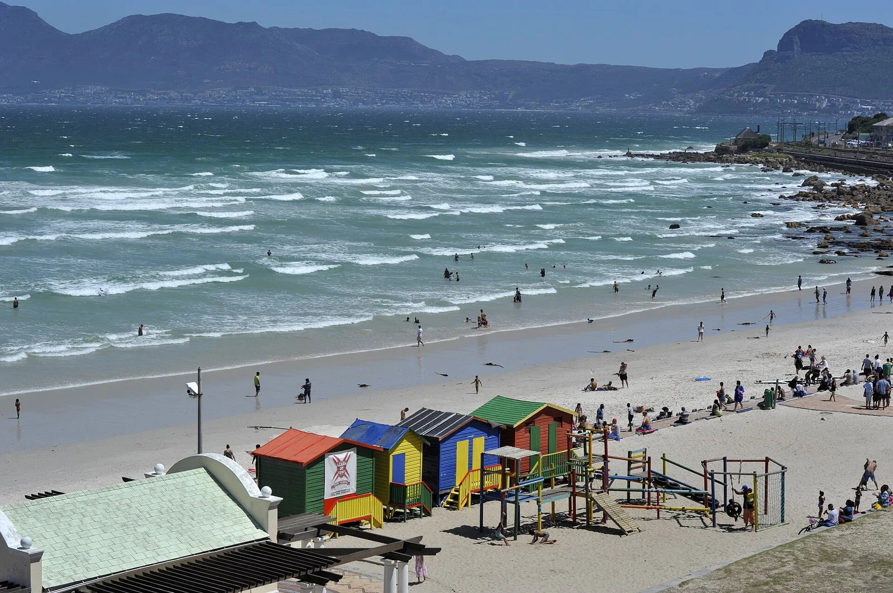

Muizenberg
Le Cap, Afrique du Sud · surf, bodyboard, baignade, paddle

La plage-école du Cap, avec ses cabanes de plage colorées et une mousse douce qui déroule longtemps. Tout le monde commence ici.
- Lieu
- Le Cap, Afrique du Sud
- Niveau
- Débutant
- Activités
- surf, bodyboard, baignade, paddle
- Type d'eau
- Mer / océan
- Coordonnées
- -34.11, 18.47 (position approximative du secteur)
Dangers à connaître
- Très fréquentée le week-end.
- Baie de False Bay : respecte les consignes de la surveillance requins.
- Eau fraîche toute l'année.
Le conseil d'Ocean Buddy
Regarde le drapeau de la vigie avant d'entrer, et reste dans la zone surveillée.
Ouvrir dans Ocean Buddy Télécharger sur l'App Store
Source : Description historique Ocean Buddy · vérification externe en attente.